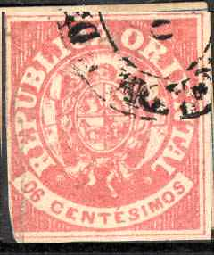
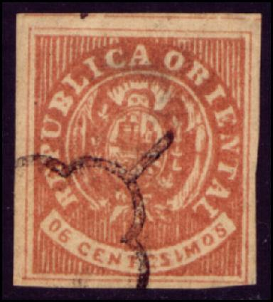
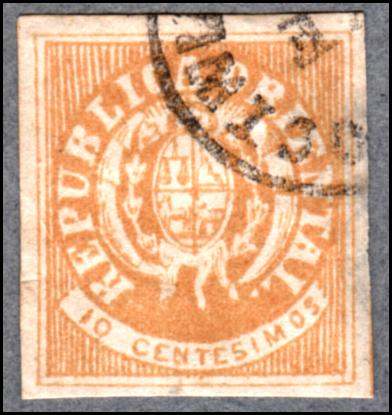
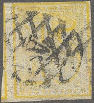

Return To Catalogue - Uruguay - 1858 'Sun' issue - 1860 'Sun' issue
Note: on my website many of the
pictures can not be seen! They are of course present in the
catalogue;
contact me if you want to purchase it.
Uruguay 1858 'Sun' issue and Uruguay 1859 'Sun' issue
06 c red 08 c green 10 c yellow 12 c blue Surcharged (1866)


5 c on 12 c blue 10 c on 08 c green 15 c on 10 c yellow 20 c on 06 c red
For the specialist: these stamps were issued after a currency reform. Tete-beche stamps (stamps attached upside down) exist of the 8 c value. The 12 c exists bisected. The surcharges became necessary after a change in postal rates. Errors of this surcharge exist (as well as forged and bogus surcharges).
Value of the stamps |
|||
vc = very common c = common * = not so common ** = uncommon |
*** = very uncommon R = rare RR = very rare RRR = extremely rare |
||
| Value | Unused | Used | Remarks |
| 06 c | RR | RR | |
| 08 c | RR | RR | |
| 10 c | RR | RR | |
| 12 c | RR | RR | |
| 5 c on 12 c | RR | RRR | |
| 10 c on 08 c | RR | RRR | |
| 15 c on 10 c | RR | RRR | |
| 20 c on 06 c | RR | RRR | |
Forgeries of these stamps exist (inclusive the overprints). The genuine stamps should have an accent over the second "E" of "CENTESIMOS" (there are at least five forgeries without this accent according to Album Weeds). The letters "RI" of "ORIENTAL" are joined at the bottom in the genuine stamps.

Forgeries, no accent on "E" of "CENTESIMOS",
"R" and "I" not joined at the bottom. I've
seen it with a numeral "..02" (1602?) cancel, a
"CORREOS" cancel and others.

(Note the strange cancel on these forgeries! It resembles the
'Spider' cancel of Spain)

("R" and "I" of "ORIENTAL" are not
joined in these forgeries)

(Another forgery with the "R" and "I" of
"ORIENTAL" not joined)

Another forgery of the 12 c value.

Forgery of the 10 c with the lettering different from a genuine
stamp. These forgeries often carry a
typical "VF" cancel that can be found on forgeries
of many other countries. It also exist with other bogus cancels.

Pair of forgeries pasted on piece of an envelope.
The forger Sperati made forgeries of the 6 c and 8 c stamps.


Sperati forgeries with 'SPERATI REPRODUCTION' printed at the
back.
For the 6 c, Sperati copied type 6 from the plate; for the 8 c, he copied type 3.

1 c black (to be used on newspapers) 5 c blue 10 c green 15 c yellow 20 c red
Note that the inscription of these stamps (except the 1 c) is 'CENTECIMOS' instead of 'CENTESIMOS'.
Value of the stamps |
|||
vc = very common c = common * = not so common ** = uncommon |
*** = very uncommon R = rare RR = very rare RRR = extremely rare |
||
| Value | Unused | Used | Remarks |
| Imperforate | |||
| 1 c | *** | RR | |
| 5 c | RR | *** | |
| 10 c | RR | RR | |
| 15 c | RR | RR | |
| 20 c | RR | RR | |
| Perforated | |||
| 1 c | R | R | |
| 5 c | R | *** | |
| 10 c | R | *** | |
| 15 c | R | R | |
| 20 c | R | *** | |

Different type? with the upper part of the '5' missing. Is this
type 7 with 'cabeza blanca' perhaps?

Essay in a similar design as the 5 c, but with two '5's in the
bottom corners.

I have seen forgeries of these stamps:
Forgery of the 1 c with lettering and horse different.

Another forgery of the 1 c value with horizontal lines extending
over the top of the mountain in the upper right part of the
design.


(Forgeries, "M" of "MONTEVIDEO" too far to
the right)

I've been told that this forgery is a 'Barcelona forgery'. The
vertical box with "CENTESIMOS" is a real rectangle in
the genuine stamps, here it has a pointed bottom part. Also, the
"Y" of "URUGUAY" is placed too far to the
right and the background text is too coarse. I've also seen it in
yellow with a 'Spiro' cancel (resembling a New South Wales
cancel).


Forgeries of the 20 c value, note the Spanish 'Spider' cancel on
the 2nd forgery. The "M" of "MONTEVIDEO" is
placed too far to the left and the "2" is placed too
low. I've also seen this forgery with a cancel consisting of
parallel lines. Note, that one of the forgeries has the VF Cancel, found on many forgeries of
other countries. This remark is also true for the "ARREGONDO" cancel.

Another forgery of the 20 c
(What is this? 10 c yellow?)
A very deceptive forgery type of the 5 c is given in Hoffmann's book. It exists with and without the white upper part of the '5' (even printed in pairs).
For stamps of Uruguay from 1877 to 1920 click here.


{kind=link}
{kind=link}
{kind=link}
{kind=link}